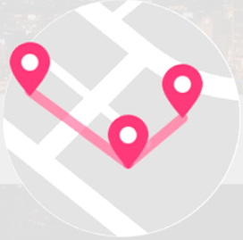

<div class="contaniner">
    <nav>
        <div class="logo_group" @click="go_home">
            
            <p class="title">TRAPPY</p>
        </div>
        <ul>   
            <!-- <li><router-link to="/login">帳戶</router-link> </li> -->
            <li><a href="javascript:void(0)" @click="open_signin_window"><router-link to="/login">帳戶</router-link></a></li>
            <!-- <li><a href="javascript:void(0)" @click="open_signin_window">帳戶</a></li> -->
            <li><a href="javascript:void(0)" @click="open_travel_window">行程</a></li>
            <li><a href="">聊天</a></li>
            <li><a href="">通知</a></li>
            <li><a href="">下載</a></li>
            <li><a href="">關於我們</a></li>
        </ul>
    </nav>


    <div class="album" v-cloak>
        <transition-group name="fade" class="imgList" tag="div">
            
            <!--  -->
        </transition-group>
    </div>


        <!--  -->
    <div class="search">
        <div class="sel_menu">
            <ul>
                <li v-for="menu in selected" @click="select_item" >{{menu.type}}</li>
            </ul>
        </div>
        <input type="text" name="search-bar" placeholder="搜尋..." name="search" id="search">
        <i class="fas fa-search"></i>

    </div>
    
    <!-- <div v-show="css.black_block.display" class="block" @click="close_other">
        
    </div> -->

    <div  v-show="css.top_anno.display" class="top_anno">
        <div class="t_group">
             
            <p class="title">TRAPPY 規劃</p>
        </div>
        
        <p class="intro">只需選擇目的地與出發日期就能規劃旅遊行程</p>
        <a class="button" href="#">建立行程</a>
        <a class="text" href="#">看其他人去哪裡玩</a>
    </div>

    <div class="sub_nav">
        <ul>
            <li v-for="(sub_nav,key) of subnav" 
                @click='change_tab(key)'
                :class="{border_focus:subnav[key].state}">
                {{sub_nav.cht}}</li>
        </ul>
    </div>

    <div class="sub_page">
        <restaurant_page v-show="sub_tab=='restaurant'" subclass="restaurant" subname="hot"></restaurant_page>
        <restaurant_page v-show="sub_tab=='restaurant'" subclass="restaurant" subname="new"></restaurant_page>
        <article_page v-show="sub_tab=='article'" subclass="post" subname="hot"></article_page>
        <article_page v-show="sub_tab=='article'" subclass="post" subname="new"></article_page>
        <article_page v-show="sub_tab=='activity'" subclass="activity" subname="hot"></article_page>
        <article_page v-show="sub_tab=='activity'" subclass="activity" subname="new"></article_page>
        <view_page v-show="sub_tab=='view'" subclass="view" subname="hot"></view_page>
        <view_page v-show="sub_tab=='view'" subclass="view" subname="new"></view_page>
        <hotel_page v-show="sub_tab=='hotel'" subclass="hotel" subname="hot"></hotel_page>
        <hotel_page v-show="sub_tab=='hotel'" subclass="hotel" subname="new"></hotel_page>
    </div>
</div>    
